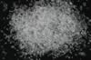

|
|
(For further information on spectroscopy, see:
http://speclab.cr.usgs.gov)
TITLE: Quartz HS32 DESCRIPT
DOCUMENTATION_FORMAT: MINERAL
SAMPLE_ID: HS32
MINERAL_TYPE: Tectosilicate
MINERAL: Quartz
FORMULA: SiO2
FORMULA_HTML: SiO2
COLLECTION_LOCALITY: Rock Springs, Arkansas
ORIGINAL_DONOR: Hunt and Salisbury Collection
CURRENT_SAMPLE_LOCATION: USGS Denver Spectroscopy Laboratory
ULTIMATE_SAMPLE_LOCATION: USGS Denver Spectroscopy Laboratory
SAMPLE_DESCRIPTION:
This particular sample is a very pure variety of clear crystal quartz, and careful grinding has produced a sample with very high reflectivity and almost devoid of spectral features. There are only two very weak features at 2.3 and 2.5µm in the finest grain sizes. Because there are no bands at 1.4µm or 1.9µm, these features cannot be attributed to water or hydroxyl groups in the quartz. The cross-overs of the two very fine grain sizes with the others is not significant.
Hunt, G.R., J.W. Salisbury, 1970, Visible and near-infrared spectra of minerals and rocks: I. Silicate minerals. Modern Geology, v. 1, p. 283-300.
Sieve interval 74-250µm.
Results of petrographic examination: Crystal clear quartz.
Salisbury, J. W., Walter, L. W., and Vergo, N., 1987, Mid-Infrared (2.1-25µm) Spectra of Minerals: First Edition, U.S. Geological Survey Open File Report 87-263.
IMAGE_OF_SAMPLE:

END_SAMPLE_DESCRIPTION.
XRD_ANALYSIS:
Pure. (Norma Vergo)
Pure quartz.
Salisbury, J. W., Walter, L. W., and Vergo, N., 1987, Mid-Infrared (2.1-25µm) Spectra of Minerals: First Edition, U.S. Geological Survey Open File Report 87-263.
END_XRD_ANALYSIS.
COMPOSITIONAL_ANALYSIS_TYPE: None # XRF, EM(WDS), ICP(Trace), WChem
COMPOSITION_TRACE:
COMPOSITION_DISCUSSION:
Results of XRF or other compositional analysis: Essentially pure SiO2 within the limit of microprobe error.
Salisbury, J. W., Walter, L. W., and Vergo, N., 1987, Mid-Infrared (2.1-25µm) Spectra of Minerals: First Edition, U.S. Geological Survey Open File Report 87-263.
END_COMPOSITION_DISCUSSION.
MICROSCOPIC_EXAMINATION:
Colorless transparent. No contamination visually apparent.
END_MICROSCOPIC_EXAMINATION.
SPECTROSCOPIC_DISCUSSION:
END_SPECTROSCOPIC_DISCUSSION.
SPECTRAL_PURITY: 1a2_3_4_ # 1= 0.2-3, 2= 1.5-6, 3= 6-25, 4= 20-150 microns
| LIB_SPECTRA_HED: | where | Wave Range | Av_Rs_Pwr | Comment |
|---|---|---|---|---|
| LIB_SPECTRA: | splib04a r 4135 | 0.2-3.0µm | 200 | g.s.= |
| LIB_SPECTRA: | splib05a r 5854 | 0.2-3.0µm | 200 | g.s.= |
| LIB_SPECTRA: | splib06a r 19141 | g.s.= |
{kind=link}